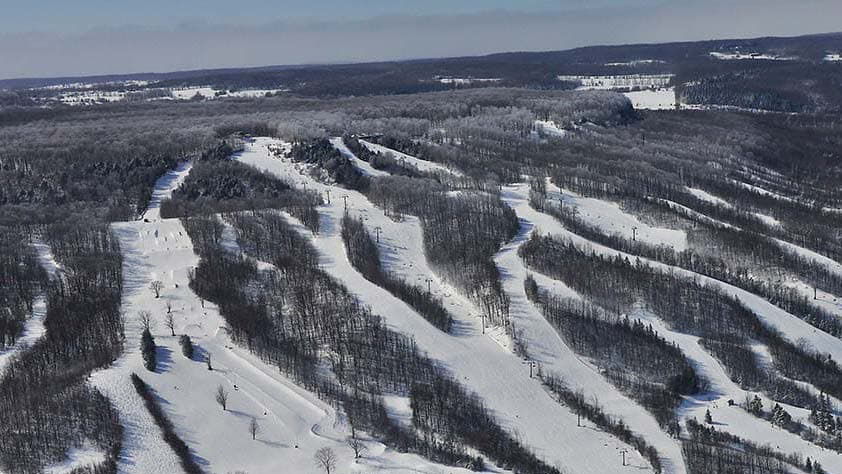

A verticle drop of 745 feet is one of the greatest in Ontario,
providing some of the longest runs, many over one km in length. Osler
boasts an almost perfect fall line on all of our 20 runs for the
beginner to the expert, spread over 130 acres we offer the most
skiable acreage per member of all Ontario clubs. Our fleet of four
groomers operated by seasoned staff with more than 90 years of
experience work throughout the night creating pristine corduroy on all
of our trails prior to each ski day resulting in optimum snow
conditions “bar none”! We have two high-speed detachable quad chairs
and one fixed grip quad service our ski trails; our platter lift and a
160 foot magic carpet service our beginner “Beehive” area.